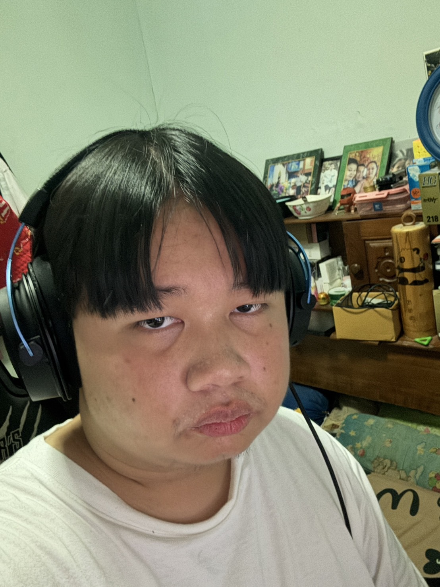

หลังตัด
กลับบ้านมารู้สึกเส้นผมมันดูแปลกๆจากร้านที่ไปตัดมาผมคงคิดว่าเค้าน่าจะตัดเพือมาไว้ให้เพราะมันสั้นเกินจนรู้สึกตกใจผมคิดว่าเค้าคงตัดเพื่อรอเสาร์อาทิตย์ พอวันจันทร์ก็เข้าทรงพอดี
พอไปตัดผมมารีแอคชั่นคนที่บ้านบอกผมโคตรหล่อผมเลยรู้สึกดีใจอยู่เพราะปกติคนที่บ้านชอบว่าผมเป็ฯคนป่ามั้งแหละเป็นคนน่ากลัวมั้งแหละพอตัดมาก็เค้าบอกทรงนี้โอเคร เอาจริงๆผมเป็น
คนไม่ชอบตัดผมเลยออกจะ ไม่ชอบเพราะผมเป็นคนชอบไว้ผมยาว แล้วชอบไปตัดให้มันเข้าทรงตอนยาวทีเดียวแต่นี้ผมรู้สึกไว้ยาวจริงๆ ตั้งแต่ปิดเทอมรอบก่อน ก่อนที่จะมาเปิดเทอมมาสองถึงสาม
สัปดาห์ผมมันยาวจนถึงปากมสามารถกินเส้นผมของ ผมได้เลยโดยไม่ต้องคีบเส้นผมเข้าปากอ่านแล้วดูแปลกๆ แต่สรุปรอผมยาวอย่างเดียวเลยตอนนี้ (หน้าผมดู happy มาก)